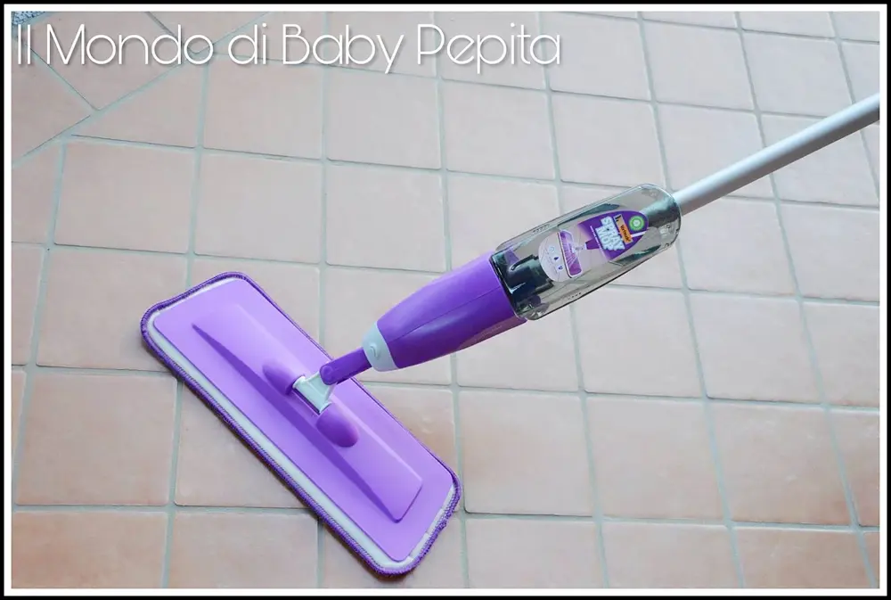
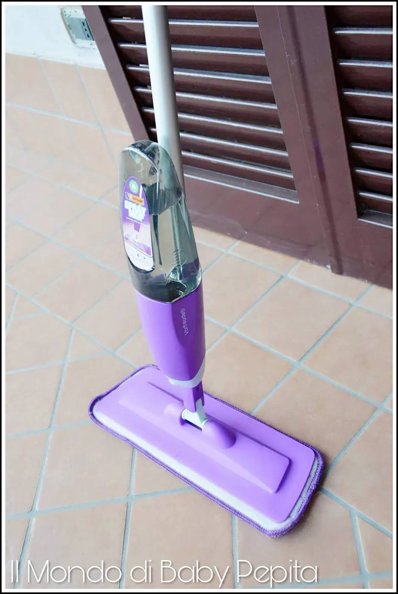
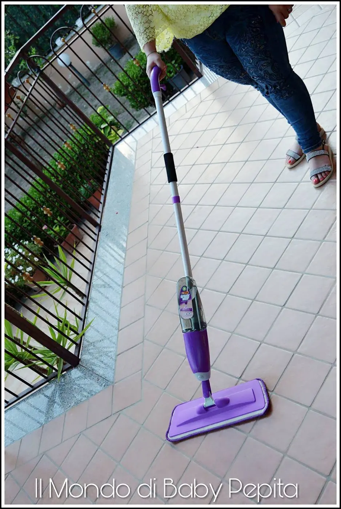
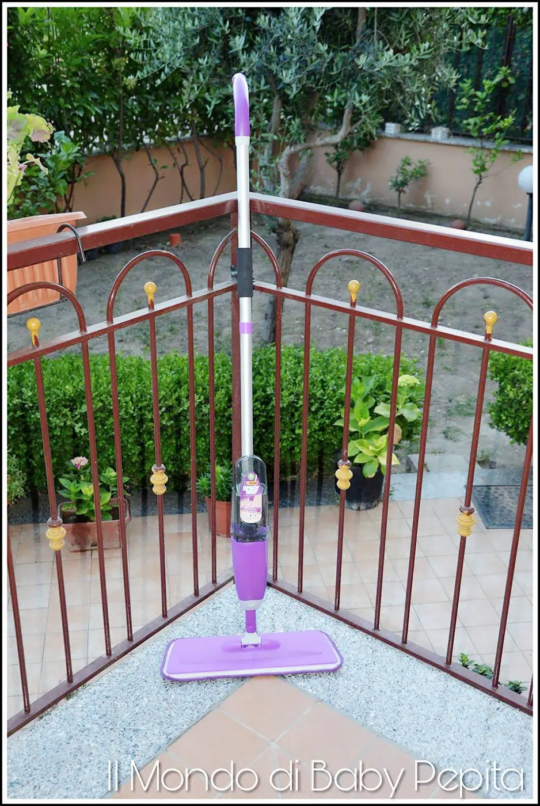
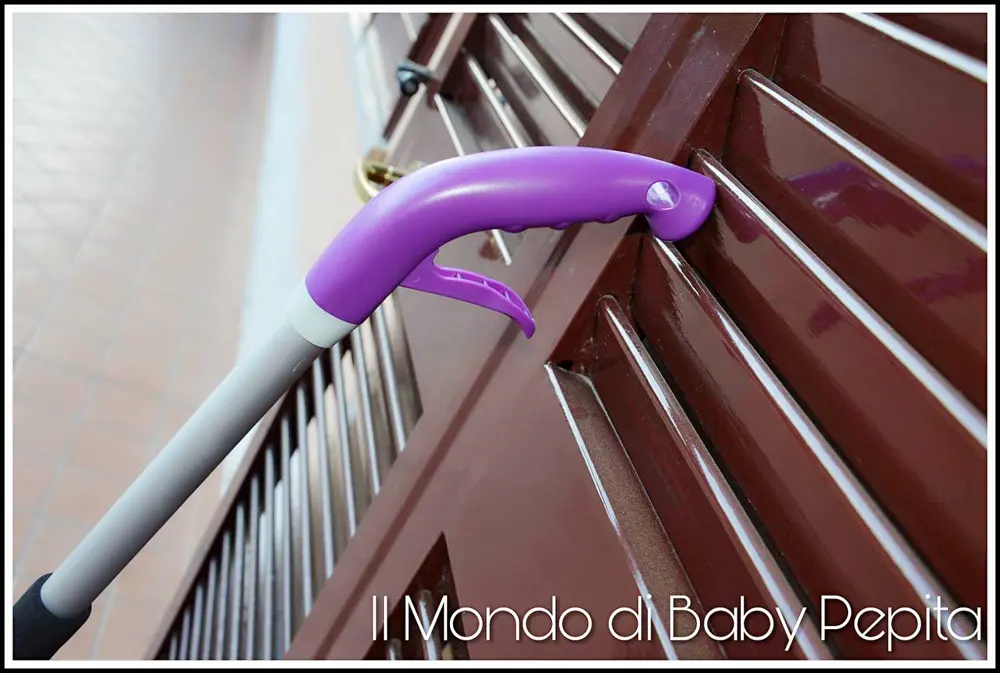

Scopa/Mocio spray

Oggi parliamo di polvere e di pulizie ed io? io vi consiglio un ottimo alleato pratico e veloce.
Il mocio spray umidificante.
Di cosa si tratta? Non è una scopa elettrica ma una scopa normalissima con una funzione in più, quella appunto di inumidire la zona che vogliamo pulire.
Oppure può essere usata semplicemente a secco.

La testa girevole facile da poter manovrare e farla arrivare anche in diversi angoli della casa.

La superficie è fatta da un panno in micro fibra che ha milioni di microscopiche fibre che catturano lo sporco, i capelli e la polvere, è a strappo che è comodamente lavabile in lavatrice e riutilizzabile, quindi comoda ed economica.
La scopa è dotata, come dicevamo, di una funzione spray per inumidire, per fare ciò ha un flacone da 700 ml. All'interno possiamo diluire l'acqua con un pò di detersivo per pulire laddove ne sentiamo il bisogno in quel momento, oppure anche con olii essenziali o meglio ancora aceto o limone.
Ad esempio: mettete caso avete gente a casa e accidentalmente casca a terra coca cola, resta tutto appiccicoso, che odio. Vi è mai capitato?

Et voilà, entra in gioco la scopa/mocio e il gioco è fatto!
Ovviamente serve solo per i casi di 'emergenza' oppure di gocce d'acqua che cadono qui e lì quando ci laviamo o per qualche macchia che vediamo durante il giorno, ma per chi è esigente nelle pulizie è naturale che è sempre meglio lavare.
Ma in casi di vera urgenza lo trovo davvero ottimo come prodotto!
Con questo metodo si risparmia tanto, tra tempo, batteria, panni monouso e liquidi per la pulizia.

Il manico inoltre, è in alluminio, mentre il corpo di tutta la scopa è interamente in plastica.
Sul manico ovviamente, troveremo un pulsante a getto, rivolto verso il basso, in modo da innescare lo spruzzo dell'acqua ogni volta che vorremo bagnare la zona dove stiamo passando con il mocio.
Prezzo: 29,00 €
Dove acquistarlo:
